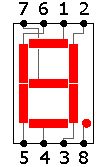
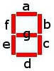

Overview
In this lab, you will hopefully come to grips with the concept of subcircuits. You've already created a few, though you didn't treat them as such. When you created multiple circuits in your initial_labs.circ file in the previous lab, you were potentially creating subcircuits. In Logisim, any circuit you create becomes a "part" in your library, which can be dropped into any other circuit. We will use this function and concept to create a Seven-Segment Digital Display in three parts: a PLD, a Seven-Segment Decoder, and the Display Circuit.
A PLD is a Programmable Logic Device. In engineering, this is a device that may be used on programmable integrated circuits (ICs) to produce complicated combinational circuits. In the real world, the IC is full of AND, OR, XOR, NOR, and other gates which can be programmed and configured via switches to produce the desired logic design internally. Then you simply have to drop the device onto your breadboard and wire up its inputs and outputs. Of course, programming an IC requires the proper equipment. Fortunately, Logisim has the capability to create and use programmable chips.
A PLD's necessary components are generated for you in Logisim when you provide a Truth Table or a Logical Expression that correctly expresses the functionality of your circuit. In this lab, we will use a truth table. You are to create a BCD (binary coded decimal) to 7-segment decoder. A BCD to 7-segment decoder is a circuit which takes a 4-bit BCD value and outputs 7 signals that control a seven-segment display. This display contains 8 LEDs. Seven of the LEDs are normally labeled as shown. (It may seem confusing, but check again: the numbering is clockwise from the top segment, with the center segment last.) The 8th LED is used to indicate a decimal point, which we will not be using. Do not worry about the decimal point, only concern yourself with the other 7 inputs that control the parts of the number.
(The following explanation is just a generic overview of creating a PLD in Logisim. Skip to the Procedure section for this lab's instructions!)
To Create a PLD in Logisim:
- Create a truth-table for your circuit. Remember that a full truth-table has a row for every possible combination of inputs, in counting order.
- Copy the outputs area of your truth table to a text file or spreadsheet. If you use a text file, separate the columns with tabs.
- Open Logisim's Combinational Analysis tool via the Window menu.
- On the Inputs tab, add the appropriate input names, per your truth table.
- On the Outputs tab, add the appropriate output names.
- Flip over to the Table tab. There you will see a complete truth table for your inputs. You may change individual output values on each row of this table manually, or you may copy output values from the tab-separated table and paste them into appropriate positions in the table. Select all the outputs in your text or spreadsheet file, copy them, and paste them into this table.
- Click Build Circuit and name the circuit appropriately. This will build a sub circuit of that name in your project. This will allow you to single-click on your part and add an instance of it to the circuit.
Logisim automatically creates a part shape with the appropriate number of inputs and outputs. (These are automatically labeled, too, as you will see if you hover your mouse over its input and output pins.) If you make any changes to the base part, it will instantly update throughout your project wherever it is used, so be careful about changing parts that have already been plugged into larger circuits - especially if those changes will change the dimensions or pin-layout of the shape.
Procedure

- For each decimal number given by the binary representation DCBA, your circuit should display the correct segments on the figure to the right. For instance, if your number is 0101, or 5 in decimal, the segments a, c, d, f, and g should be lit up and the others should not be.
- Create a truth table using Microsoft Excel (not on paper; this has a purpose!) for the seven-segement decoder. The truth table should have inputs labeled: D, C, B, A where D is the most significant input. The outputs of the table should be labeled as a, b, c, d, e, f, and g corresponding to the segments in the figure shown to the right. (Keep in mind that 'A' and 'a' are not the same thing). The file should contain enough rows to account for input values from 0 to 15 (0 to F in hexadecimal), activating the appropriate segments to display these values. For any value above 9, an 'E' (for Error) should be displayed by activating the appropriate segments. Save the file as sevenTable.xlsx
- Open Logisim and use SAVE AS to save the empty project as seven_seg.circ
- The top folder in the Libraries tree should now be seven_seg. Right click and add a new circuit called Display. You may delete the circuit labeled main.
- Right-click on that top folder and select Add Circuit and add another circuit called 7SegDecoder. You can also get this option from the Project menu.
- Good news! You don't have to create those nasty logical expressions for each of the LEDs! You get to use the tool in Logisim that you wish you could have used for the previous lab. ;)
- Open the Combinational Analysis Tool from the Window menu. We will use this to create a third circuit, called 7segPLD. We will use the Truth Table tool which will allow Logisim to generate the circuit based on your truth table. Click the Input tab and add the appropriate input names (D, C, B, and A where D is the most significant bit) and click Add. Similarly, click the Output tab and add the output names (a, b, c, d, e, f, and g) corresponding to the segments listed in the above figure. Click on Table and load the correct output values into the truth table by copying and pasting from your spreadsheet. (Note: you can copy all of your output values from your spreadsheet and paste them into the truth table all at one time. However, make sure you only copy the cells with truth values -- 0 or 1 -- in them!)
- Click Build Circuit. Be sure to name the circuit 7segPLD and make sure the destination is set to seven_seg.circ
- Close the Combinational Analysis window.
- Now you should have three circuits, (Display, 7segDecoder, and 7segPLD) in your project library.
- NOTE: Double-clicking on a circuit displays its contents. Single-clicking on a circuit allow you to create an instance of it as a part in another circuit.
- NOTE: Logisim draws a magnifying glass over the icon of the circuit currently being viewed; the current circuit name also appears in the window's title bar.
- REMEMBER: the D input of your 7segPLD circuit is the most significant. This means that it will appear as the top input when added as a subcircuit. Keep this in mind when wiring.
- Double-click on the 7SegDecoder circuit. You should see an empty breadboard at this point.
- Create an instance of the 7segPLD circuit as a part (Click on the circuit one time!) and place it on the 7SegDecoder's breadboard. Move the part to the middle of the breadboard.
- Add the following I/O:
- 1 4-bit input - labeled BCD_In
- 1 1-bit input - labeled DP_In
- 8 1-bit outputs - each labeled corresponding to the segment they will be attached to. Also one labeled DP_Out.
- Connect DP_In to DP_Out. This is simply a pass through.
- Connect the rest of the inputs and outputs to the 7segPLD circuit so as to allow a 4-bit BCD number to be the input, and the correct outputs to be activated.
- Test and log all possible inputs and the outputs they generate. Outputs for individual segments are expected to be numbered in the appropriate order. Save the log file as sevenSegmentLog.txt.
- Now, double-click the Display circuit and bring the 7SegDecoder into the Display circuit as a part. You have now built a circuit within a circuit within a circuit! Place the part into the middle portion of the breadboard.
- Add a Seven Segment Display device (found in the Input/Output library folder on the left) to the right of the 7SegDecoder.
- Connect the output of the 7SegDecoder to the inputs of the Seven Segment Display. Note the previous images to make proper connections.
- Add the following I/O:
- 1 4-bit input labeled BCD
- 1 1-bit input labeled DP
- Connect the I/O that was just added to the circuit.
- Test all possible input values again to make sure that the correct value is displayed on the display device.
- Save this circuit. Keep it safe throughout the semester.
- Submit Files
Requirements
- All the usual requirements in terms of format, aesthetics, and submission packaging apply.
- ALL files must be labeled.
- Be sure to log your test of the 7segPLD's functionality, as directed above, and include that log in your submission package.
- As to the circuit itself, it must activate the appropriate lights on the Seven Segment Display to display the value corresponding to its four-bit input.
Submission
- A zipped file containing:
- seven_seg.circ
- sevenTable.xlsx
- sevenSegmentLog.txt